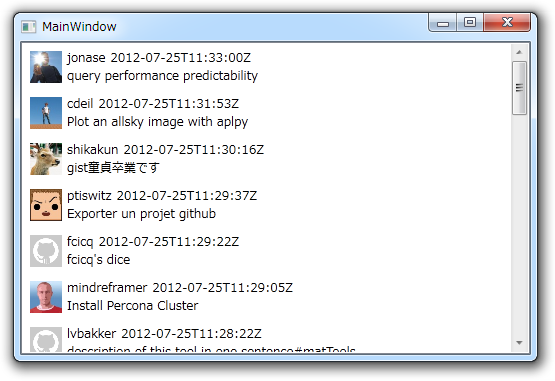

失敗の数だけ強くなりたい（ Jason.NET についての補足
公開日：

失敗の数だけ強くなりたい - だるろぐ の補足。
"files": {
"close_duplicate_tab.js": {
"type": "application/javascript",
"filename": "close_duplicate_tab.js",
"raw_url": "https://gist.github.com/raw/3175551/c7590ad8cfdd352150a8c845ff96fb9f30bd3a65/close_duplicate_tab.js",
"language": "JavaScript",
"size": 1465
}
}この Json は Dictionary<string, File> でうけることになるのだけど、 File を最初以下のとおりに定義していた。
public struct File { public string @type; public string filename; public string raw_url; public string language; public string size; }
これでもいいのだけれど、フィールドはビューへバインディングできないのでプロパティにした、というのは前回に言った*1。
public struct File { public string @type { get; set; } public string filename { get; set; } public string raw_url { get; set; } public string language { get; set; } public string size { get; set; } }
これでうまくいったのだけれど……うっかり struct を class にしてなかった。それでも動くんだな…… struct でもプロパティ持てるの？*2 よくわからなくなってくる。ここでは値を渡すことはないし、のちのち面倒くさいことになったら嫌なので class にしておいたほうが無難かな。
まぁ、それは置いておこう。
次に気になるのは、プロパティが Snake Case になっていること。やっぱり Pascal Case にしておきたい。試してみたところ*3、 Jason.NET でデシリアライズするときには大文字と小文字が区別されないようなので、先頭を大文字にしてもいいようだ。
public class File { public string @Type { get; set; } public string Filename { get; set; } public string Raw_Url { get; set; } public string Language { get; set; } public string Size { get; set; } }
しかし、これでも Raw_Url のようにアンダーバーが残ってしまう。 Snake Case を勝手に Pascal Case のフィールド・プロパティへ割り当ててくれないかなぁ、とほのかに期待していたのだけれど、そこまではやってくれないみたい*4。そんなときは、 JasonProperty 属性を利用すればよいようだ。
public class File { public string @Type { get; set; } public string Filename { get; set; } [JsonProperty("raw_url")] public string RawUrl { get; set; } public string Language { get; set; } public string Size { get; set; } }
それだけ。